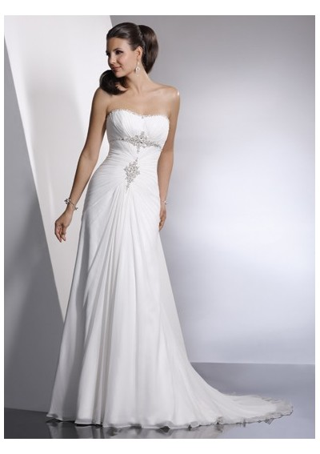

Welcome to Blog
NUXE - cosméticos naturales - Tratamientos faciales y corporales, Antiedad, Spa
2021.03.31 11:03 nuxe.com utiliza cookies con fines estadísticos y para poder presentarle servicios y ofertas acordes con sus preferencias.
Más información sobre cookies
La nueva colección de desmaquillantes
y limpiadores con agua floral de Rosa.
EN BUMA
La 1ª crema hidratante 24 h en spray.
Saber más ANTIEDAD CATEGORÍAS Super Serum [10] Primeras arrugas 25+ Firmeza 40+ Redensificantes 50+ Regeneración y nutrición 50+ Todas las edades NECESIDADES Antiedad primeras arrugas Antiedad arrugas instaladas Antiedad redensificantes Antiedad absoluto Reveladores de juventud Hombres Super Serum [10]El concentrado antiedad universal: corrección arrugas, firmeza, manchas.
Saber más CRÈME PRODIGIEUSE ® BOOSTLa nueva colección de tratamientos multi-corrección.
Saber más CUERPO CATEGORÍAS Higiene y exfoliación Cabello Hidratantes y nutritivos Adelgazante y reafirmante Manos Tratamientos multi-funciones Autobronceador Protección solar Para después del sol Perfumes y Absolu NECESIDADES Tratamientos nutritivos Protección Solar Tratamientos multi-funciones Hombres RÊVE DE MIEL ®Envuelva su piel con el poder reparador de la miel.
Saber más NUXE BODYEn un solo gesto, rediseñe los contornos de su feminidad
Saber más HUILE PRODIGIEUSE® HUILE PRODIGIEUSE® Huile prodigieuse ® 50 ml Huile prodigieuse ® 100 ml Huile Prodigieuse® Florale 100 ml Huile prodigieuse® Or 50 ml Huile prodigieuse® Or 100 ml Huile Prodigieuse ® Riche 100 ml SU HISTORIARetrato de un producto icónico desde hace más de 25 años.
Saber más SUS BENEFICIOSTratamiento hidratante y reparador para rostro, cuerpo y cabello.
Saber más SU FORMULAAceite seco natural con 7 aceites vegetales preciosos.
Saber más NUXE BIO GAMAS Aquabella® Crème Fraîche® de beauté Crème Prodigieuse® Boost Huile Prodigieuse® Insta-Masque Merveillance® Expert Nuxellence® Nuxuriance® Gold Nuxuriance® Ultra NUXE BIO NUXE Body NUXE Men NUXE Sun Perfumes Rêve de Miel® Soins Prodigieux® Super Serum [10] Very Rose SPA TOP VENTAS LA MARCA NUESTRA HISTORIASaber más sobre la historia de NUXE.
Saber más NUESTRO LABORATORIOUn laboratorio de formulación natural.
Saber más NUESTROS COMPROMISOSNuestros compromisos para una belleza natural y responsable.
Saber más NUESTROS INGREDIENTESDescubra todos nuestros ingredientes estrella.
Saber másPURO PLACER BIO
Hidratación y placer extremo
DescubrirBESTSELLERS
¡Adopte todos nuestros imprescindibles!
Más informaciónPRODUCTO DE CULTO
Huile Prodigieuse ®
Tratamiento hidratante con 7 aceites vegetales naturales.
Una textura única de aceite seco para nutrir y sublimar la piel.
INNOVACIÓN
Antiedad NUXE
Tratamientos expertos concentrados en activos vegetales
para prolongar la juventud de la piel
y reducir los signos de la edad.
Nuestros compromisos
Movida por una voluntad de superación,
NUXE se compromete para lograr una belleza más responsable.
Puntos de venta
Encuentre el punto de venta
NUXE más próximo a usted.
Sobre NUXE
Porque todas las mujeres son prodigiosas, el laboratorio NUXE se ha convertido en líder en los segmentos principales de la belleza en farmacia. N° 1* en tratamientos antiedad , N° 1** en tratamientos corporales , N° 1*** en aceites en Francia con su célebre aceite seco: Huile Prodigieuse® . El aceite seco NUXE sublima a la perfección el cuerpo, el rostro y el cabello.
Para una rutina de belleza prodigiosa ® , NUXE le presenta una selección de tratamientos para elegir la crema hidratante facial , la crema antiedad y la crema hidratante corporal que mejor se adapte a su tipo de piel y edad. Todas nuestras cremas faciales y cremas antiedad están compuestas por una selección inédita de activos contenidos en el interior de la planta. Cada crema NUXE procura un placer de uso excepcional gracias a texturas voluptuosas y aromas deliciosos.
Adéntrese en los spas NUXE , y especialmente en el spa de París , el más conocido: el spa NUXE Montorgueil ® , la referencia en Spas en París. Disfrute de un momento para usted e inmérjase en un ambiente de bienestar en uno de los templos de la belleza NUXE: elija su masaje * entre nuestra amplia selección de tratamientos de spa. Un regalo spa ideal para celebrar todos los grandes acontecimientos del año.
NUXE ofrece todo el prodigio de la naturaleza y una sensorialidad absoluta en cada crema facial y en cada uno de sus productos, la mayoría de ellos de culto.
NUXE, la Naturaleza es Prodigiosa ® .
* Fuente: QuintilesIMS – PEC Farmacia y Parafarmacia – Mercado antiedad y antiarrugas faciales en Francia – de 2012 a finales de 2016 – en valor
** Fuente: QuintilesIMS – PEC Farmacia y Parafarmacia – Mercado productos corporales reafirmantes y antiedad para mujer en Francia – año 2016 – en volumen y valor
***Fuente: QuintilesIMS – PEC Farmacia y Parafarmacia – Mercado tratamientos corporales en aceite para mujer en Francia – CMA Mayo 2017 – en volumen y valor.
PRODUCTOS Huile Prodigieuse® Limpiadores y Desmaquillantes Tratamientos Antiedad Hidratantes Anti-Imperfecciones Tratamientos Anti-Manchas Tratamientos Prodigieux Tratamientos Corporales Nutritivos Tratamientos Solares Trataminetos para Hombre LA MARCA Nuestra historia Nuestro laboratorio Nuetros compromisos Nuestros ingredientes BIO-BEAUTÉ® NUXE Spa SÍGANOS DONDE ENCONTRARNOS NUXE en el mundo SERVICIO Y AYUDA PF Contacto World MAPA DEL SITIO MENCIONES LEGALES PF©2021 LABORATOIRE NUXE
Arriba